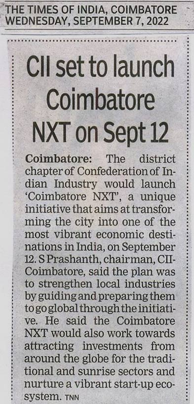
Times of India, September 7, 2022
CII set to launch Coimbatore NXT on Sept 12
Coimbatore: The district chapter of Confederation of Indian Industry would launch ‘Coimbatore NXT’, a unique initiative
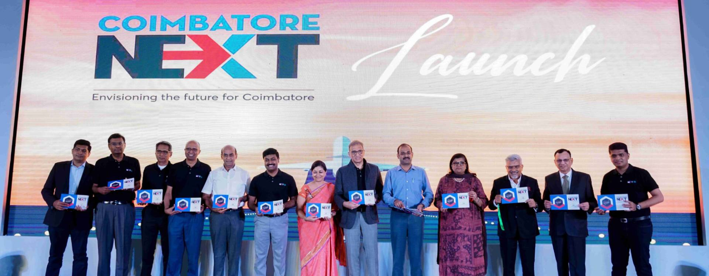

Times of India, September 7, 2022
Coimbatore: The district chapter of Confederation of Indian Industry would launch ‘Coimbatore NXT’, a unique initiative
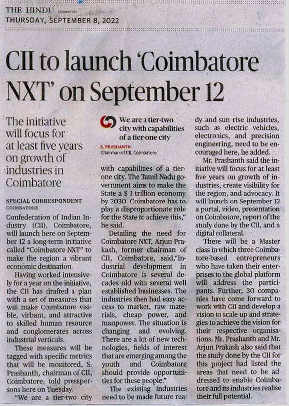
The Hindu, September 6, 2022
Confederation of Indian Industry (CII), Coimbatore, will launch here on September 12 a long-term initiative called “Coimbatore NXT” to make the region a vibrant economic destination.
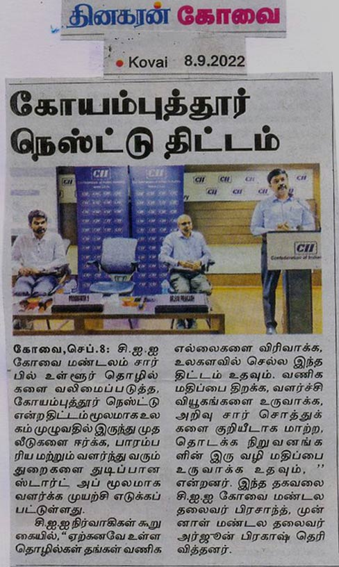
தினகரன், September 8, 2022
சி.ஐ.ஐ கோவை மண்டலம் சார்பில் உள்ளூர் தொழில்களை வலிமைப்படுத்த, கோயம்புத்தூர் நெஸ்ட்டு என்ற திட்டம் மூலமாக உலகம் முழுவதில் இருந்து முதலீடுகளை ஈர்க்க, பாரம்பரிய மற்றும் வளர்ந்து வரும் துறைகளை துடிப்பான ஸ்டார்ட் அப் மூலமாக வளர்க்க முயற்சி எடுக்கப்பட்டுள்ளது.
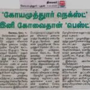
தினமலர், September 7, 2022
கோவையை இந்தியாவின் பிரதானமான முதலீடு மற்றும் வியாபார வர்த்தக தளமாக மாற்ற இந்திய தொழில் கூட்டமைப்பு
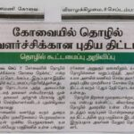
தினமணி, September 8, 2022
கோவையின் தொழில் வளர்ச்சிக்காக ‘கோவை நெக்ஸ்ட்’ என்ற திட்டம் தொடங்கப்பட இருப்பதாக இந்திய கூட்டமைப்பு தெரிவித்துள்ளது.
Deccan Chronicle, September 7, 2022
Coimbatore, Sept 6: The Confederation of Indian Industry would launch Coimbatore NXT next week, an initiative aimed at making the city most vibrant economic destinations
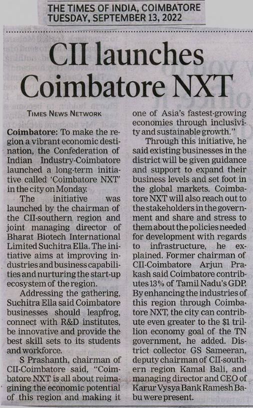
Times of India, September 13, 2022
COIMBATORE: To make the region a vibrant economic destination, the Confederation of Indian Industry-Coimbatore launched a long-term initiative called ‘Coimbatore NXT’ in the city on Monday.
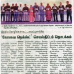
The Hindu, September 14, 2022
ஆசியாவில் வேகமாக வளரும் பொருளாதார நகராக கோவை மாவட்டத்தை மாற்றும் நோக்கத்தில் இந்திய தொழில்கள் கூட்டமைப்பு (சிஐஐ) சார்பில் ‘கோவை நெக்ஸ்ட்’ என்ற செயல்திட்டம் தொடக்கவிழா கோவையில் நேற்று முன்தினம் நடைபெற்றது.
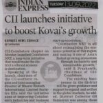
Indian Express, September 13, 2022
CII-Coimbatore chapter on Monday launched Coimbatore NXT, a long-term initiative that would make the dis-trict a vibrant economic destination.
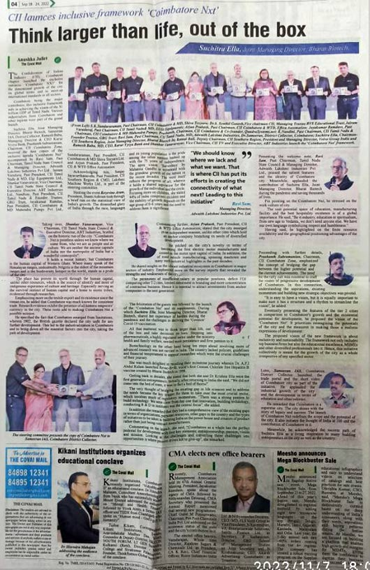
Covai Mail, September 18, 2022
CII Coimbatore chapter launched the exclusive initiative ‘Coimbatore NXT’ for the growth of the city on global terms and to meet up international standards in all sectors.
The Hindu, September 13, 2022
“Coimbatore Nxt” will redefine the scope and potential of the city, said District Collector G.S. Sameeran here on Monday as he launched the initiative of Confederation of Indian Industry (CII).
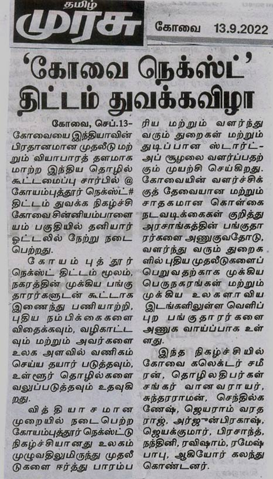
தமிழ் முரசு, September 7, 2022
கோவையை இந்தியாவின் பிரதானமாக முதலீடு மற்றும் வியாபாரத் தலமாக மாற்ற இந்திய தொழில் கூட்டமைப்பு சார்பில் @ கோயம்புத்தூர் நெக்ஸ்ட்.
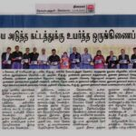
தினமலர், September 13, 2022
கோவை நெக்ஸ்ட்’ துவக்க விழா, நேற்று லீ மெரிடியன் ஓட்டலில் நடந்தது. விழாவில், சி.ஐ.ஐ., தமிழ்நாடு மாநில கவுன்சில் முன்னாள் தலைவர் ரவிசாம் வரவேற்றார்.
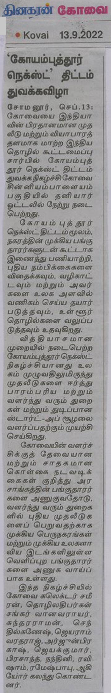
தினகரன், September 13, 2022
கோவையை இந்தியாவின் பிரதானமான முதலீடு மற்றும் வியாபாரத்தளமாக மாற்ற இந்திய தொழில் கூட்டமைப்பு சார்பில் கோயம்புத்தூர் நெக்ஸ்ட் திட்டம் துவக்க நிகழ்ச்சி கோவை சின்னியம்பாளையம் பகுதியில் தனியார் ஓட்டலில் நேற்று நடைபெற்றது.